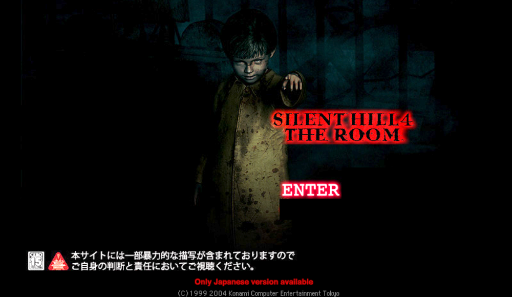
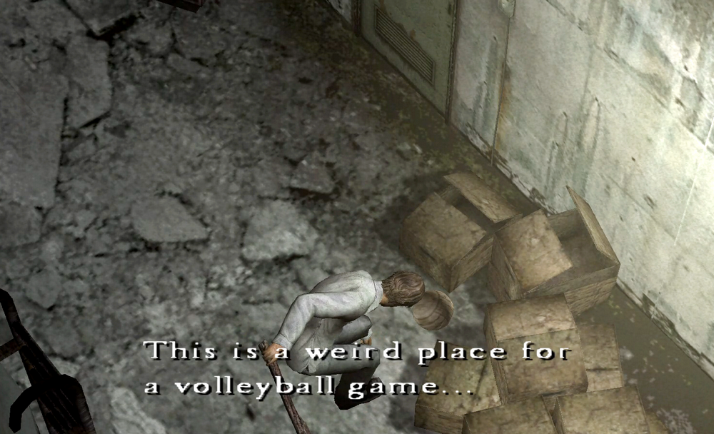
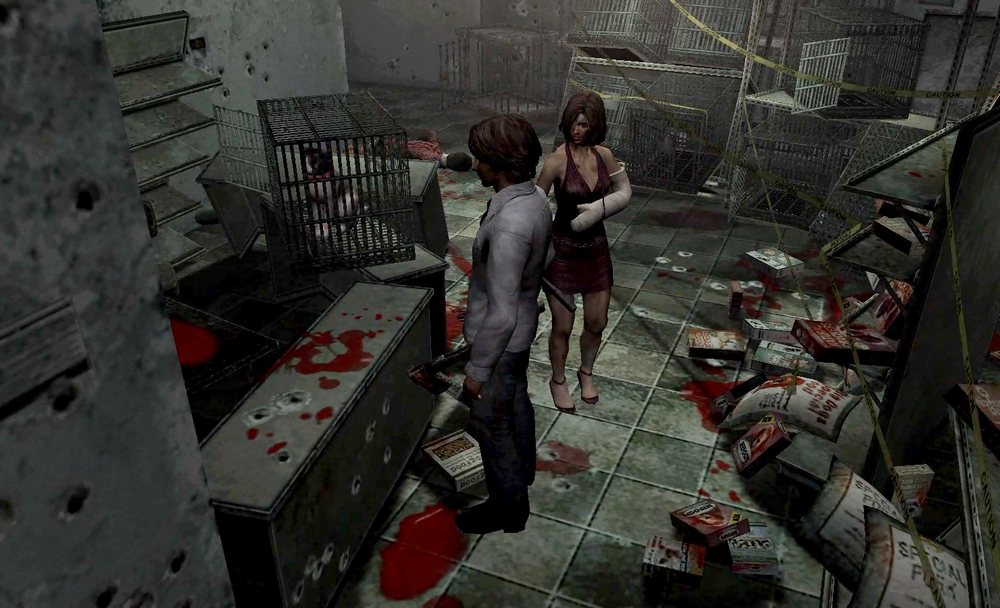
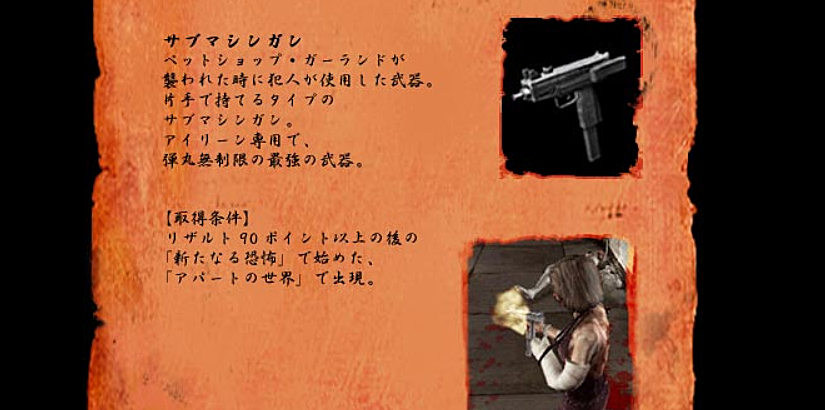
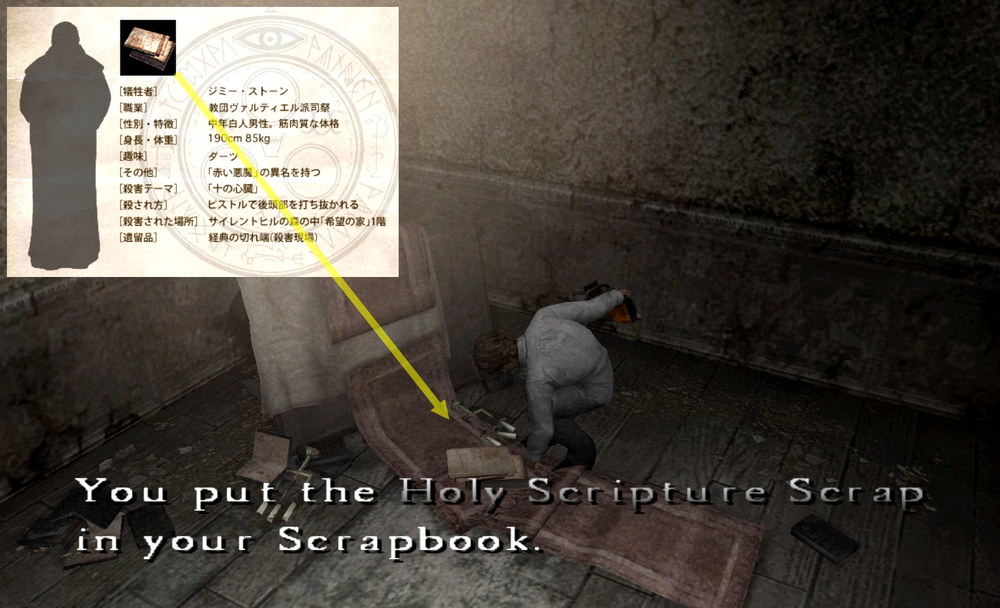
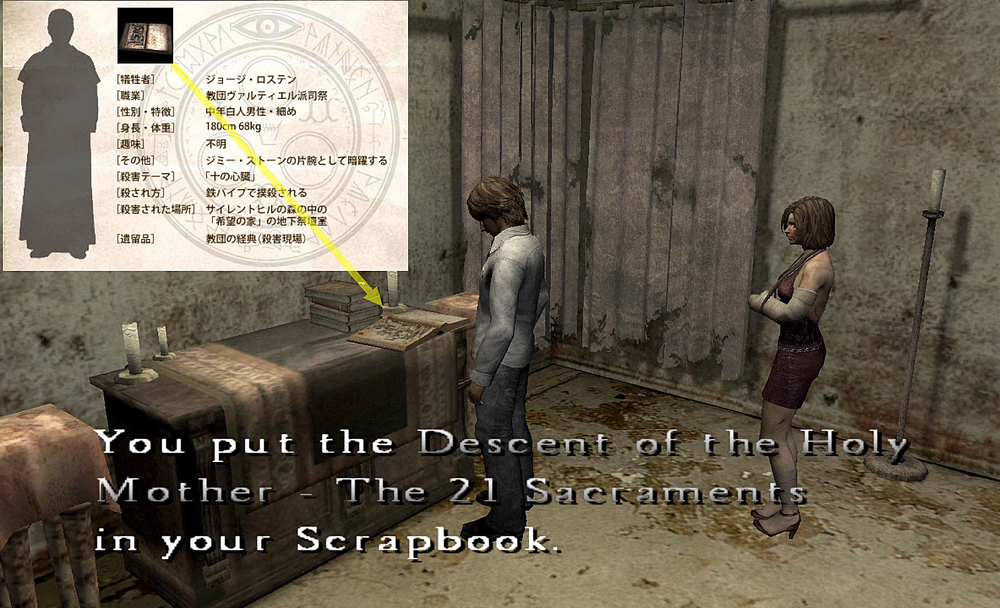
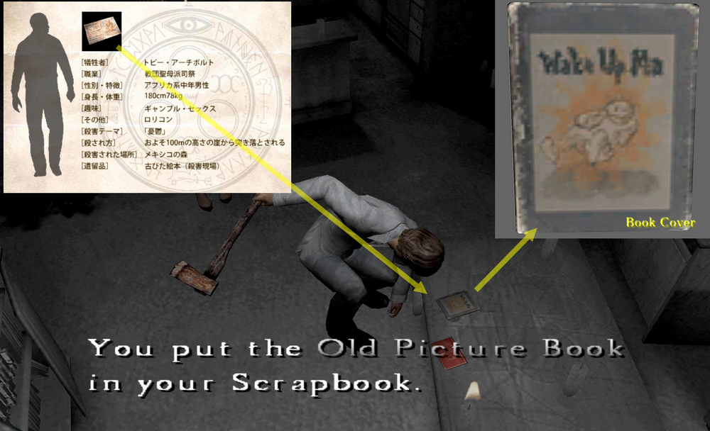
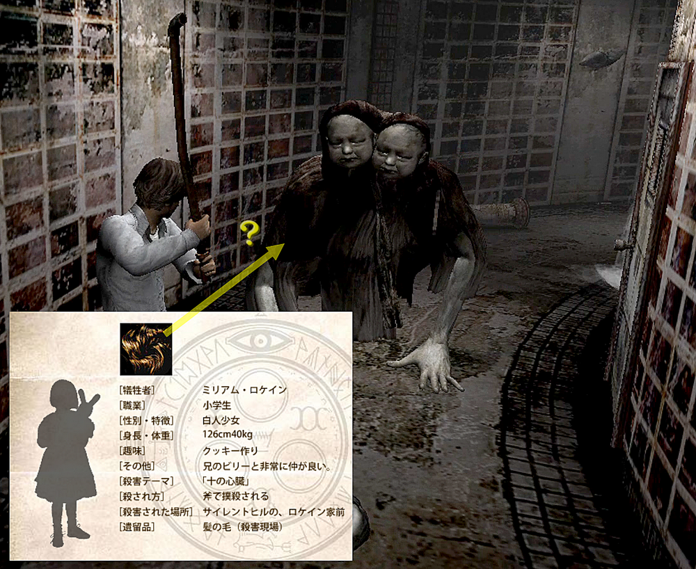

[SH4] Evidence and Weapons

Items and Weapons Listed in SH4's Victim Files
This is a mirror of the DeviantArt version linked above, provided as a backup and for easier access.

Previously, we focused on Walter's part-time job history based on info from the old official site SH2004 . com. Here is the link to the translated article on the wiki:
https://silenthill.fandom.com/wiki/Victim_files_(Silent_Hill_4:_The_Room)
![[SH4] Walter's Job Hopping](img/da08.png)
That material includes both behind-the-scenes details that never appear directly in the game and clues that do appear within the game. The points are connected, even if some parts remain unclear.

For example, in the game, it's Henry who goes looking for that volleyball. This is the same volleyball I mentioned last time. It's the one that disappeared from the Albert's Sports after Walter took it, and it was left behind by Billy Locane.
The cat figurine also ties back to Walter's childhood, he once dropped a kitten's cage and was scolded for it. Eventually, he killed the person who scolded him and all the animals.

If I remember right, the submachine gun used then is Eileen's unlockable weapon, while Henry's Rusty Axe was supposedly the one used to kill the twins.
I've seen a source for the submachine gun part, but I can't find the one for the axe. If anyone still has it, please share.

Submachine Gun
This was the weapon used by the culprit when Pet Shop Garland was attacked.
A submachine gun that can be held in one hand.
Eileen's exclusive weapon, it is the strongest weapon with unlimited ammo.
It's not stated clearly, but the golf club used to kill Rick is said to be one of the many you can pick up in the game, so the axe might be something along those lines.
Looking at the other cases, Walter strangled some victims and beat another to death. Not only is he good with weapons, but he also proved to be unexpectedly strong in hand-to-hand combat...
The torn Holy Scripture page found in the Wish House is Jimmy Stone's pieces of evidence.

The Holy Scripture found underground is something George Rosten left behind.

The Old Picture Book is a remnant left by Toby Archbolt. Since it's in Joseph's room in the game, it might also be connected to his death???

And needless to say, the Locane twins mentioned in SH2 appear as the Twin Victim in SH4.

Miriam's left-behind items are strands of her hair…